Gute Arbeit reicht nicht — sie muss gesehen werden
Fünf Kapitel lang hast du gebaut: mich kennengelernt, die Anfrage gelernt, Abläufe eingerichtet, die Werkstatt geöffnet, deine Website und dein System gemacht. Aber wenn niemand sieht, was du gebaut hast, ist es so gut wie nicht da. Dieses Kapitel ist das Schaufenster: was du filmst, wie du schneidest, worauf der Algorithmus wirklich schaut, wie aus einer Nachricht Arbeit wird. Die Kamera gehört nicht mir — sie gehört dir. Ich bin Cutter, Texter und Analyst.
Am Ende dieses Kapitels
- unterscheidest du Reichweite, Interaktion und Abschluss und weißt, wann du was verfolgst
- verstehst du ehrlich, was der Algorithmus ist — und was nicht
- baust du die ersten drei Sekunden bewusst
- schreibst du deine eigenen Inhaltssäulen
- schneidest du mit mir ein Video vom Rohmaterial bis zur Veröffentlichung
- richtest du eine smarte DM ein, die Nachrichten in Arbeit verwandelt
- weißt du, welche Zahl zählt, und baust die wöchentliche Inhaltsmaschine
Inhalt
01Das Unsichtbarkeitsproblem
Es gibt mehr Menschen, die gute Arbeit machen und die niemand kennt, als Menschen, die schlechte Arbeit machen und die alle kennen. Das ist ungerecht, aber kein Geheimnis: Sichtbarkeit ist eine eigene Fähigkeit und lässt sich lernen. Sie ersetzt dein Können nicht — sie setzt darauf auf.
Ich unterrichte in diesem Kapitel keine Werbung. Was ich unterrichte, ist enger und nützlicher: ein System, um deine Arbeit regelmäßig vor die Menschen zu bringen, die sie sehen sollten. Ich unterstreiche das Wort System, denn zu posten, wenn die Eingebung kommt, ist keine Strategie.
Eine Warnung gleich am Anfang: Inhalte zu produzieren ersetzt nicht das System, das du gebaut hast. Ein sichtbares Konto ohne etwas dahinter wird einmal angeschaut und liegen gelassen. Wenn du die fünf Kapitel davor gemacht hast, hast du etwas Echtes zu sagen. Ein Schaufenster wirkt nur vor einem vollen Laden.
Mach das jetzt: Vervollständige diesen Satz: «Ich mache ___ für ___.» Füll die Lücken. Dieser Satz ist der Ausgangspunkt des ganzen Kapitels; ist er unklar, wird kein Inhalt klar.
02Drei Wörter: Reichweite, Interaktion, Abschluss
In jedem Kapitel haben drei Wörter das ganze Feld geöffnet. Hier auch — und diese drei zu verwechseln ist der Grund, warum die meiste Zeit in sozialen Medien verpufft.
Daraus folgt die Regel: Mit der obersten Zahl prahlt man, mit der untersten entscheidet man. Aufrufe machen Laune; Kunden zahlen die Miete. Die Frage bei der Bewertung deiner Inhalte lautet nicht «wie viele haben es gesehen», sondern «wie viele haben mir geschrieben».
Mach das jetzt: Wie viele Menschen haben dir in den letzten dreißig Tagen geschrieben oder dich angerufen? Schreib die Zahl auf. Am Ende dieses Kapitels messen wir diese Zahl — nicht die Aufrufe.
03Was der Algorithmus wirklich tut
Das meiste, was über den Algorithmus erzählt wird, ist erfunden. Ehrlich gesagt: Die genauen Regeln kennt von außen niemand, sie ändern sich oft und unterscheiden sich von Plattform zu Plattform. Aber was er zu tun versucht, weiß jeder, und das ändert sich nicht.
jemandem geschickt?
zurückgekehrt?
Drei praktische Folgerungen: Abschlussrate (bleiben die Leute bis zum Ende), Weiterleitungen (schicken sie es jemandem) und Regelmäßigkeit (wie oft du veröffentlichst). Alle drei hast du in der Hand. Taktiken wie «poste zu dieser Uhrzeit» oder «nimm so viele Hashtags» sind saisonal; lauf ihnen nicht hinterher.
Noch etwas: Der Algorithmus bestraft dich nicht. Eine schlechte Woche ist eine Messung, keine Strafe. Der Gedanke «ich bin eine Vorhersagemaschine» aus dem Kapitel über mich gilt auch hier — das System schaut in die Vergangenheit und sagt voraus; es urteilt nicht.
Mach das jetzt: Schau dir die durchschnittliche Wiedergabedauer deiner letzten zehn Beiträge an. Vergleich die besten drei mit den schlechtesten drei: Was ist in den ersten drei Sekunden anders? Schreib die Antwort auf — das ist der nächste Abschnitt.
04Die ersten drei Sekunden
Das Schicksal eines Videos entscheidet sich in den ersten drei Sekunden. Der Daumen liegt schon bereit zum Weiterwischen; du musst einen Grund zum Anhalten geben. Das nennt man den Haken, und er ist kein Zufall, sondern gebaut.
- 0.0s Visueller Stopper Ein ungewohntes Bild, eine Bewegung, ein Gesicht. Das, was den Wischreflex unterbricht.
- 0.5s Das Versprechen Ein Satz, der sagt, was man bekommt: «in drei Minuten baust du das».
- 1.5s Spannung Eine Frage, deren Antwort am Ende kommt, oder ein Widerspruch. Ein Grund zu bleiben.
- 3.0s Der Anfang Der eigentliche Inhalt. Wer hier ankommt, bleibt meist bis zum Ende.
Ich kann den Haken schreiben, allein aber nicht gut: Ich muss wissen, was du erzählen willst. Gib mir das Transkript des Videos, und ich hole fünf verschiedene Haken heraus; du wählst den ehrlichen. Ich unterstreiche ehrlich: Ein Haken, der etwas verspricht, was der Inhalt nicht hält, gewinnt die ersten drei Sekunden und verliert die nächsten dreißig — und das Vertrauen.
Mach das jetzt: Erzähl mir von einer deiner besten Arbeiten und sag: «Schreib fünf Haken dafür; höchstens acht Wörter; keine Übertreibung.» Lies alle fünf, wähl einen, wirf den Rest weg.
05Deine Inhaltssäulen
Die Frage «was poste ich heute» wird, täglich gestellt, nie gut beantwortet. Die Lösung sind drei oder vier Säulen: Jeder Beitrag fällt in eine davon, und du fängst nicht jeden Tag bei null an.
Sind die Säulen gesetzt, ist Ideenproduktion meine Aufgabe. Erzähl mir deine Säulen und deine Arbeit, und ich hole zehn Ideen je Säule heraus — vierzig Ideen, ein Monatsprogramm. Wähl die, die du machen kannst; eine Idee, die du nicht umsetzen kannst, ist keine.
Mach das jetzt: Schreib deine eigenen vier Säulen. Die oben sind Beispiele; deine können anders aussehen. Gib sie mir dann und verlang zehn Ideen je Säule.
06Von der Idee zum Video: Schnitt mit mir
Der Schnitt ist der zeitfressendste Teil der Inhaltsproduktion — und der Teil, der sich am meisten verkürzen lässt. Ich kann dein Video nicht sehen, aber sein Transkript lesen; und die meisten Schnittentscheidungen fallen nicht im Bild, sondern im Wort. Die Animation unten zeigt, wie Rohmaterial veröffentlichungsreif wird.
Der zweite Schritt ist das Herzstück. Du gibst mir das Transkript und sagst: «Kürz das auf neunzig Sekunden. Welche Sätze bleiben, welche gehen — mit Zeitstempeln auflisten. Zerstör den Sinn nicht, wirf Wiederholungen und Pausen raus.» Ich liefere eine Schnittliste; du schneidest diese Zeiten im Programm und bist in einer halben Stunde fertig.
Sag ich auch, was ich nicht kann: Ich kann dein Video nicht ansehen, die Bildqualität nicht beurteilen, keine Musik wählen, keine Farbkorrektur machen. Wo Worte sind, bin ich schnell; wo Bilder sind, vertraue ich dir. Die Ehrlichkeit aus dem Kapitel über mich gilt auch hier.
Mach das jetzt: Nimm eine Rohaufnahme von deinem Handy und hol ihr Transkript (Handy oder Schnittprogramm können das). Gib es mir und verlang eine Schnittliste für neunzig Sekunden. Veröffentliche heute Abend ein Video.
07Untertitel, Titelbild und Titel
Ist das Video fertig, bleiben drei kleine Aufgaben, und alle drei beeinflussen, ob es geschaut wird, mehr als der Inhalt selbst. Der Reihe nach:
Untertitel
Die meisten schauen ohne Ton. Ein Video ohne Untertitel ist für diese ganze Gruppe ein Stummfilm. Schnittprogramme erzeugen sie automatisch; du korrigierst nur Eigennamen und Fachbegriffe. Gibst du mir das Transkript, sammle ich auch die Tippfehler ein.
Titelbild
Das Quadrat, das im Profilraster erscheint. Es sollte nicht das schönste, sondern das erklärendste Bild des Videos sein — mit drei Wörtern darauf. Öffnet jemand in einem halben Jahr dein Profil, sind die Titelbilder seine Speisekarte.
Titel
Die erste Zeile ist so wichtig wie der Haken, denn mancherorts wird sie vor dem Video gelesen. Kurz halten, das Versprechen wiederholen, am Ende eine einzige Frage — eine Frage bringt Kommentare, Kommentare sind Interaktion. Gib mir das Transkript, ich schreibe zehn Titel.
Alle drei sind Fünf-Minuten-Aufgaben und alle drei werden übersprungen. Zur Gewohnheit werden sie, wenn du sie zum Schnitt zählst: Ein Video ist erst fertig, wenn Untertitel und Titel geschrieben sind.
Mach das jetzt: Gib mir das Transkript des in 06 veröffentlichten Videos und verlang zehn Titel. Wähl den ehrlichsten — nicht den verlockendsten.
08Rhythmus: wenig, aber ohne Unterbrechung
Die häufigste Frage ist «wie viele Beiträge am Tag», und die Antwort ist fast immer dieselbe: so viele, wie du durchhältst. Zwei Videos pro Woche, sechs Monate ohne Unterbrechung; sieben Videos pro Woche, nach drei Wochen aufgegeben. Das Zweite kommt an das Erste nicht heran.
Eine Woche lang zwei Beiträge am Tag, dann ein Monat Stille. Das erschöpft dich und bringt deinem Publikum nie bei, wann du kommst. Zudem fühlt sich jede Rückkehr wie ein Neuanfang an.
Zweimal pro Woche, immer an denselben Tagen. Das Publikum wartet, du planst, ich bereite vor. Selbst wenn du eine Woche krank bist, liegen zwei Videos auf Lager.
Möglich macht den Rhythmus das Sammeldrehen: In einer Sitzung vier Videos drehen, über vier Wochen veröffentlichen. Drehen ist ein Tag, Schnitt mit mir ein paar Stunden, Veröffentlichung automatisch. Der Zeitauslöser aus dem Agenten-Kapitel hilft auch hier; von Hand zu veröffentlichen ist aber ebenso in Ordnung, solange das Datum feststeht.
Mach das jetzt: Wähl zwei Wochentage in deinem Kalender und markiere die nächsten acht Wochen. Dann reservier einen Tag für den ersten Sammeldreh. Ohne Termine entsteht kein Rhythmus.
09DMs schlau machen
Wenn der Inhalt wirkt, kommen Nachrichten. Und genau hier verlieren die meisten: Eine Nachricht kommt, wird drei Tage später gesehen, beantwortet, vergessen. Der Ablauf, den du im Agenten-Kapitel gebaut hast, war genau für diese Lücke; jetzt hängen wir ihn an eine echte Verwendung.
- 1Neue Nachricht kommt, der Ablauf wacht auf
- 2Ich: Bestellung, Frage oder Zusammenarbeit?
- 3Ist sie häufig, entwerfe ich eine Antwort
- 4Benachrichtigung an dich: Entwurf + freigeben / ändern
- 5Ins CRM: Person, Quelle, Thema, Datum
Die Grenze automatischer Antworten lautet: Begrüßung und Weiterleitung dürfen automatisch sein, eine Beziehung nicht. Dass eine Maschine «Hallo, deine Nachricht ist angekommen, ich melde mich heute» schreibt, ist unproblematisch. Dass eine Maschine «Ich mache das für Sie zu diesem Preis» schreibt, ist es nicht. Die Regel über unumkehrbare Werkzeuge aus dem Agenten-Kapitel heißt hier: Zusagen machen.
Mach das jetzt: Schau deine letzten fünfzig Nachrichten an und schreib die drei häufigsten Fragen auf. Formulier die Antworten darauf mit mir und leg sie in deinen Ablauf. Ab morgen beantworten sich diese drei von selbst.
10Kommentare: das billigste Wachstum
Der Kommentarbereich ist die Fortsetzung des Inhalts, und die meisten lassen ihn leer. Dabei hat jemand, der kommentiert, sein Interesse schon gezeigt; eine gute Antwort dort bringt schneller Arbeit als ein neuer Beitrag.
Die erste Stunde
Antworte in der ersten Stunde nach dem Posten auf Kommentare. Das hält das Gespräch lebendig, und in diesem Zeitfenster wird der Inhalt mehr gezeigt. Das ist kein Trick; Systeme mögen lebendige Gespräche, weil Menschen sie mögen.
Mach aus der Frage einen Inhalt
Kam dieselbe Frage dreimal, ist das ein Video. Kommentare sind eine kostenlose Umfrage, die dir sagt, was dein Publikum gelehrt bekommen will. Führ eine Liste; «was poste ich heute» fragst du nie wieder.
Der schwierige Kommentar
Kommt Kritik, geh nicht in Verteidigung. Hat sie recht, nimm sie an und korrigier; hat sie unrecht, antworte kurz und freundlich oder gar nicht. Die meisten Mitlesenden erinnern sich nicht an den Kommentar, sondern daran, wie du dich verhalten hast.
Du kannst mich Kommentarantworten schreiben lassen, aber nicht alle. Dein Publikum kennt deinen Ton und spürt nach einer Weile, welche Antwort nicht von dir kam. Gut bin ich darin, zwanzig Entwürfe vorzubereiten; dass du sie liest und änderst, ist Pflicht.
Mach das jetzt: Beantworte heute alle Kommentare unter deinem letzten Beitrag. Notier dann die am häufigsten wiederkehrende Frage — das ist dein Video dieser Woche.
11Wohin führt der Klick
Jemandem hat dein Inhalt gefallen und er hat auf den Link in deinem Profil getippt. Jetzt die entscheidenden zehn Sekunden: Was sagt die Seite? Bei den meisten Konten ist es eine Startseite, und der Besucher verliert sich. Richtig wäre eine Seite mit nur einer Aufgabe.
Nicht die Länge der Seite zählt, sondern dass sie eine Aufgabe hat. «Über uns», «Blog», «Referenzen» gehören nicht auf diese Seite; sie zerstreuen die Aufmerksamkeit. Der Besucher drückt die Schaltfläche oder geht — und beides ist Information.
Mach das jetzt: Beschreib mir diese vier Blöcke und sag: «Bau eine Seite mit einer Aufgabe, verbinde das Formular mit diesem Ablauf.» Ersetz dann den Link in deinem Profil damit.
12Kampagne: mit Geld beschleunigen
Werbung beschleunigt, was funktioniert; sie rettet nicht, was nicht funktioniert. Dieser Satz ist der ganze Abschnitt. Geld hinter Inhalte zu stecken, die organisch nie Arbeit gebracht haben, ist wie mehr Schilder an einen leeren Laden zu hängen.
- 1Warte zuerst auf einen Beleg: Es soll einen Inhalt geben, der organisch mindestens einmal Arbeit gebracht hat. Dahinter steckst du Geld, nicht hinter etwas Neues.
- 2Fang klein an: Dein Tagesbudget soll ein Zehntel dessen nicht übersteigen, was dir ein Kunde bringt. Das ist ein Testbudget, keine Investition.
- 3Änder eine Variable: Änderst du Bild, Text und Zielgruppe gleichzeitig, erfährst du nie, was gewirkt hat.
- 4Zähl Abschlüsse, nicht Klicks: eingegangene Nachrichten und gewonnene Aufträge. Ein Klick ist ein Anzeichen; ein Kunde ist ein Ergebnis.
- 5Warte sieben Tage, dann entscheide. Nach den Zahlen des ersten Tages abzuschalten heißt, vor dem Messen aufzuhören.
Ehrlicher Rat: Die meisten, die diesen Kurs beenden, werden gar keine Werbung brauchen. Zwei gute Videos pro Woche, beantwortete Nachrichten und eine Seite mit einer Aufgabe füllen meist die Kapazität einer kleinen Agentur. Denk an Werbung, wenn deine Kapazität leer bleibt.
Mach das jetzt: Schalt vorerst keine Werbung. Schreib stattdessen eine Zahl auf: Was verdienst du an einem durchschnittlichen Kunden? Ein Zehntel davon wird später dein tägliches Testbudget.
13Welche Zahl zählt
Plattformen zeigen dir Dutzende Zahlen, und die meisten wirken darauf angelegt, dich zu beschäftigen. Eine Agentur muss einmal pro Woche auf vier Zahlen schauen; der Rest ist Neugier.
Schreib diese vier Zahlen einmal pro Woche auf, am selben Tag, an derselben Stelle. Ein weiteres Blatt in der Tabelle aus dem Labor-Kapitel genügt. Nach einem Monat siehst du eine Kurve; nach zwei hörst du auf zu raten, was wirkt, und beginnst es zu wissen.
Mach das jetzt: Leg in deiner CRM-Tabelle ein Blatt «Woche» an: Datum und diese vier Spalten. Füll die Zeile dieser Woche jetzt aus — das Messen beginnt heute.
14Die wöchentliche Inhaltsmaschine
Alles aus diesem Kapitel fügt sich zu einer wöchentlichen Schleife. Einmal eingerichtet, dreht sie sich jede Woche gleich und kostet insgesamt etwa fünf Stunden.
- SammelnFragen aus Kommentaren und Nachrichten
- Wählenzwei Ideen nach Säulen, Haken von mir schreiben lassen
- Drehenin einer Sitzung, roh, nicht perfekt
- SchneidenTranskript → Schnittliste → Untertitel → Titel
- Messendie vier Zahlen notieren, nächste Woche anpassen
Mach das jetzt: Verteil diese fünf Schritte auf die Wochentage. Sammeln und wählen am Montag; drehen am Dienstag; schneiden am Mittwoch; messen am Freitag. Trag es als wiederkehrenden Termin in deinen Kalender.
15Markenstimme: was dich ausmacht
Hunderte Konten machen alles aus diesem Kapitel, und die meisten gleichen einander. Das Einzige, was unterscheidet, ist die Stimme: wie du sprichst, was dich ärgert, was du nie tust. Eine Stimme ist kein Slogan, sondern eine wiederkehrende Haltung.
«Ich sage nicht, dass ich das in drei Tagen fertig habe. Es dauert zwei Wochen, weil ich nicht ohne Messung anfange.»
Da ist eine Haltung, eine Grenze, ein Grund. Diesen Satz könnte niemand sonst schreiben.
«Qualitativer Service, faire Preise, Kundenzufriedenheit hat Priorität.»
Der Satz, den alle sagen und niemand glaubt. Lösch ihn, und es fällt niemandem auf.
Deine Stimme kann ich nicht finden — aber einfangen. Gib mir zehn selbst geschriebene Texte, und ich hole deinen Stil heraus: deine Satzlänge, deine Lieblingswörter, das, was du meidest. Diese Beschreibung legen wir wie im Werkstatt-Kapitel in eine Datei, und ab dann klingt jeder Entwurf von mir nach dir. Die ersten zehn Texte schreibst aber du; es braucht ein Original zum Nachbilden.
Mach das jetzt: Sammel zehn selbst geschriebene Texte (Beiträge, Nachrichten, E-Mails) in einer Datei und gib sie mir: «hol meinen Stil heraus, schreib ihn als Regeln». Lies, was herauskommt — du wirst dich erkennen.
16Die Ehrlichkeitsgrenze
Mit diesen Werkzeugen lässt sich vieles machen, und nicht alles davon sollte gemacht werden. Vier Grenzen; zwei rechtliche, zwei einfach, weil sie richtig sind.
Zeig keine Arbeit, die nicht deine ist
Eine im Internet gefundene Arbeit ins eigene Portfolio zu stellen, heißt Fälschung und fliegt früher oder später auf. Hast du wenig Arbeit, zeig wenig; eine echte Arbeit ist besser als zehn gestohlene.
Verheimlich nicht, was künstlich ist
Gib mit KI erzeugte Bilder oder Stimmen nicht als echt aus. Hilfe beim Schnitt und beim Text ist normal; einen Satz, den ein Mensch nie gesagt hat, mit seiner Stimme zu veröffentlichen, nicht. In manchen Ländern ist das zudem strafbar.
Kauf keine Kommentare oder Follower
Gekaufte Interaktion senkt die Rate, mit der echte Menschen dich sehen — du kaufst also Unsichtbarkeit. Und wenn eines Tages aufgeräumt wird, bleibt nichts übrig.
Teil Kundenarbeit nicht ohne Erlaubnis
Die besten Inhalte sind echte Arbeiten, aber man muss vorher fragen. Füg deinem Vertrag eine Zeile hinzu: «Darf ich die Arbeit zur Eigenwerbung nutzen?» Die meisten sagen ja; ohne zu fragen zu posten, beendet die Beziehung.
Das ist keine Moralpredigt, sondern Geschäftsrat. Sichtbarkeit ist ein langes Spiel, und dein einziges Kapital darin ist Vertrauen. Ist es einmal erschüttert, sind die Kosten der Rückgewinnung höher als alles, was die Abkürzung eingebracht hat.
Mach das jetzt: Schau auf dein Profil und dein Portfolio: Ist alles, was du zeigst, wirklich deins und genehmigt? Wenn nicht, nimm es heute herunter. Füg dann deinem Vertrag diese eine Zeile hinzu.
17Fünf häufige Fehler
1 · Nicht veröffentlichen, bis es perfekt ist
Zehn gute Videos im Ordner sind weniger wert als ein veröffentlichtes durchschnittliches. Veröffentlichen, messen, korrigieren. Deine ersten Videos werden ohnehin schlecht sein; also bring sie schnell hinter dich.
2 · Mit einer Begrüßung anfangen
Während du «Hallo Leute, heute zeige ich euch…» sagst, ist der Zuschauer weg. Das erste Wort soll zum Thema gehören; die Vorstellung kommt ans Ende oder gar nicht.
3 · Nach Aufrufen entscheiden
Ein viel gesehener Inhalt ohne Aufträge ist schlechter als ein wenig gesehener, der zwei Kunden bringt. Entscheide mit der untersten Zahl.
4 · Nachrichten warten lassen
Die Inhaltsarbeit zu machen und sich erst drei Tage später zu melden, wirft die ganze Mühe weg. Automatisier die Begrüßung, antworte selbst — aber am selben Tag.
5 · Alles von mir schreiben lassen
Der Entwurf von mir, die Stimme von dir. Unangetastet veröffentlichte Texte ähneln sich mit der Zeit, und dein Publikum merkt es vor dir.
Mach das jetzt: Prüf diese fünf an deinen letzten zehn Beiträgen. Besonders 2 und 4 — beide am leichtesten zu beheben und mit der größten Wirkung.
18Was alle fragen
Muss ich vor die Kamera?
Nein, aber es hat einen Preis. Ein Gesicht schafft am schnellsten Vertrauen; gesichtslose Konten wachsen auch, nur langsamer und mit mehr Inhalt. Alternativen: Hände und Arbeit im Bild, deine Stimme dazu; Bildschirmaufnahmen; Vorher–nachher. Kameraangst legt sich meist beim dritten Video — das berichten alle, die es getan haben.
Wenn sich der Algorithmus ändert, ist dann alles umsonst?
Nichts aus diesem Kapitel hängt am Algorithmus: der Haken, die Säulen, der Rhythmus, der Schnitt, das Beantworten von Nachrichten, die Ein-Aufgaben-Seite, die vier Zahlen. Das bleibt über Plattformen hinweg gleich. Ich habe es bewusst so geschrieben — Taktiken wie «poste zu dieser Uhrzeit» habe ich weggelassen, weil sie in sechs Monaten veralten.
Ab wie vielen Followern kommen Aufträge?
Der Zusammenhang zwischen Followerzahl und Aufträgen ist schwächer, als man denkt. Ein Konto mit fünfhundert Followern, das die richtige Arbeit zeigt, bekommt regelmäßig Anfragen; eines mit fünfzigtausend und allgemeinen Inhalten womöglich keine. Wichtig ist, dass man in zehn Sekunden versteht, was du machst, und weiß, wohin man schreibt.
Kannst du meine Videos schneiden?
Teilweise. Das Video kann ich nicht ansehen; aber ich kann das Transkript lesen und Schnittliste, Untertitelkorrektur, Haken, Titel und Beschreibung schreiben — also den größten Teil der Entscheidungen. Das Schneiden selbst machst du oder ein Schnittprogramm. In der Praxis wird aus drei Stunden Schnitt eine Dreiviertelstunde.
Soll ich denselben Inhalt auf alle Plattformen stellen?
Dieselbe Idee ja, dieselbe Datei nein. Jede Plattform hat eigene Maße, eigene Längen und eigene Gewohnheiten; ein Video mit dem Logo einer anderen Plattform wird überall weniger gezeigt. Gib mir das Transkript, ich schreibe für jede Plattform eine eigene Fassung — das ist eine Fünf-Minuten-Arbeit.
Wann sehe ich Ergebnisse?
Ehrliche Zahlen: erste Nachrichten in wenigen Wochen, ein stetiger Auftragsfluss in drei bis sechs Monaten. Diese Zeit lässt sich verkürzen, aber nicht überspringen, denn Menschen vertrauen dir, nachdem sie dich mehrmals gesehen haben, nicht einmal. Deshalb ist Rhythmus sogar wichtiger als die Qualität der Inhalte — darum ging es in Abschnitt acht.
Mach das jetzt: Wenn ein Inhalt nicht so lief wie erwartet, gib mir sein Transkript und seine Zahlen und frag: «warum hat das nicht gezündet?» Wir schauen gemeinsam auf Haken, Länge und ob das Versprechen gepasst hat.
19Übungen
1 · Ein Satz und vier Säulen
Schreib den Satz aus 01 und deine vier Säulen aus 05. Gib sie mir dann und verlang zehn Ideen je Säule.
Ziel: die Frage «was poste ich heute» nie wieder zu stellen.
2 · Schneide dein erstes Video mit mir
Mach eine Rohaufnahme, hol das Transkript, wende die fünf Schritte aus 06 an und veröffentliche diese Woche.
Ziel: einmal zu erleben, dass Schnitt nicht beängstigend ist und keine Stunden dauert.
3 · Verbinde Seite und DMs
Bau die Ein-Aufgaben-Seite, änder deinen Profillink, schalt den DM-Ablauf ein und schick dir selbst eine Nachricht.
Ziel: zu sehen, dass Interesse aus Inhalten unverloren im CRM ankommt.
4 · Vier Wochen Rhythmus
Bereite in einem Sammeldreh vier Videos vor, veröffentliche zwei pro Woche und schreib jeden Freitag die vier Zahlen auf.
Ziel: nach vier Wochen auf eine Kurve zu schauen statt zu raten.
Mach das jetzt: Die erste heute, die zweite diese Woche. Die dritte nächste Woche. Die vierte dauert ohnehin einen Monat — starte sie heute.
20Teste dich
Antworte erst selbst, dann öffnen.
Reichweite, Interaktion, Abschluss — in einem Satz?
Reichweite ist, wie viele es gesehen haben, Interaktion, wie viele stehen geblieben sind, Abschluss, wie viele geschrieben haben. Mit der obersten Zahl prahlt man, mit der untersten entscheidet man.
Was versucht der Algorithmus zu tun?
Nicht dich zu belohnen, sondern Menschen am Bildschirm zu halten. Er zeigt deinen Inhalt einer kleinen Gruppe; wird er zu Ende geschaut und weitergeschickt, verbreitet er ihn, sonst Schluss. Die Details ändern sich, diese Logik nicht.
Die vier Teile der ersten drei Sekunden?
Visueller Stopper, Versprechen, Spannung, Anfang. Keines davon ist eine Begrüßung; bis «Hallo Leute» endet, ist der Zuschauer weg.
Wozu dienen Inhaltssäulen?
Sie geben jedem Beitrag einen Platz, sodass nicht täglich bei null nach Ideen gesucht wird. Grob drei lehrend, eines verkaufend. Ein Konto, das nur verkauft, wird zur Plakatwand.
Was kann ich beim Schnitt und was nicht?
Ich kann: Schnittliste aus dem Transkript, Untertitelkorrektur, Haken, Titel, Plattformfassungen. Ich kann nicht: das Video ansehen, Bilder und Musik wählen, Farbe korrigieren. Das Wort ist meins, das Bild deins.
Was ist die richtige Zahl beim Rhythmus?
Die, die du durchhältst. Zweimal pro Woche, sechs Monate ohne Unterbrechung; sieben pro Woche, nach drei Wochen aufgegeben. Das Zweite kommt nicht heran. Möglich macht Rhythmus das Sammeldrehen.
Was automatisierst du bei DMs, was nie?
Begrüßung, Einordnung, Entwürfe für häufige Fragen und der CRM-Eintrag dürfen automatisch sein. Preise nennen, Zusagen machen, Termine zusagen nie. Unumkehrbares bleibt bei deiner Freigabe.
Die vier Blöcke der Ein-Aufgaben-Seite?
Versprechen in einem Satz, drei Belege, was dann passiert, und eine Schaltfläche. Kein Menü, kein Blog, keine ablenkenden Links. Zwei Optionen, und keine wird gewählt.
Die vier Zahlen der Wochenschau?
Anfragen, Speichern und Teilen, Wiedergabedauer, Veröffentlichungen. Follower stehen nicht auf der Liste — Follower sind ein Ergebnis, kein Ziel.
Wann schaltet man Werbung?
Wenn es einen Inhalt gibt, der organisch mindestens einmal Arbeit gebracht hat. Werbung beschleunigt Funktionierendes und rettet Nichtfunktionierendes nicht. Budget ein Zehntel eines Kundenwerts, eine Variable, sieben Tage, dann entscheiden.
Dieses Kapitel in einem Satz
Sag in einem Satz, was du machst, teil es in vier Säulen, bau die ersten drei Sekunden bewusst, überlass mir den Entscheidungsteil des Schnitts, beantworte Nachrichten am selben Tag, schick den Klick auf eine Seite mit einer Aufgabe — und schau dann einmal pro Woche auf vier Zahlen und wähl danach die nächste Woche.
Kapitel 7 · Der Gipfel
Ziellinie und Startlinie. All diese Fähigkeiten werden hier zu der einen, die verdient: Angebot, Preisgestaltung, Kundengewinnung — oder die Einnahmen des eigenen Geschäfts vervielfachen.